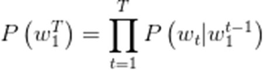
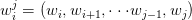
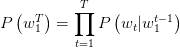
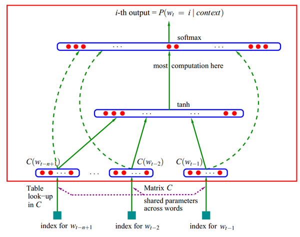
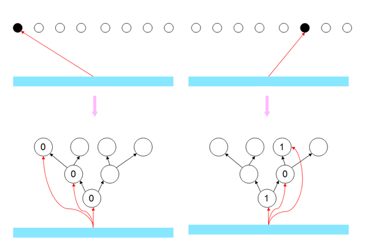
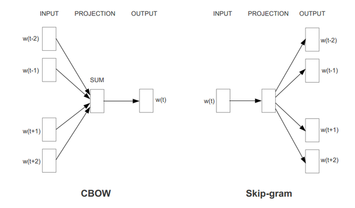

这里先回顾一下比较熟悉的N-gram语言模型。
在自然语言任务里我们经常要计算一句话的概率。比如语音识别中对于一个语音段O，需要找到一个使P(W|O)最大的文本段W。利用贝叶斯公式：
P(W|O) = P(O|W)*P(W)/P(O)
其中 P(O|W)是用hmm-gmm或者hmm-dnn建模的声学模型，而P(W)称为语言模型。
P(W)可以分解如下：

其中：

为了简化问题，可以做一个n-1阶Markov假设，即每个单词只和其前n-1个单词相关，则：

这样，只要算出这些条件概率，任意的句子的概率我们都可以计算，而这些条件概率可以通过对语料建立一个多项分布模型用最大似然法求得。
这种方法我们称为N-gram语言模型。
但是N-gram存在一个问题，若训练语料里面有些n元组没有出现过，其对应的条件概率就是0，这会导致计算一整句话的概率为0。
解决这个问题有两种常用方法：
一种是平滑法，最简单的是将出现k次的某个n元组看做出现了k+1次，这样出现0次的n元组就变成了出现1次。或者用更复杂的其他平滑方法。其本质都是将模型编程贝叶斯模型，为参数引入了先验分布，从而解决最大似然法的问题。
另一种是回退法，即如果n元的概率不到，那就用n-1元的概率乘上一个权重来模拟。
神经网络语言模型
n-gram还存在其他问题：
1.n-gram语言模型无法建模更远的关系，语料的不足使得无法训练更高阶的语言模型。（这篇文章发表时，基本都是trigram，还没有高阶的模型，不过几年后，互联网的海量数据使得可以训练10几阶的语言模型）
2.这种模型无法建模出词之间的相似度，有时候两个具有某种相似性的词，如果一个词经常出现在某段词之后，那么也许另一个词出现在这段词后面的概率也比较大,比如
The cat is walking in the bedroom
A dog was running in a room
如果第一句话里的元组在语料中出现的很多，训练的很充分，第二句话中的元组在语料中出现的少，训练的不充分，那么使用语言模型计算第一句话的概率就比较高，而第二句话的概率就低。 如果有一种方法，能知道The和a相似，cat和dog相似等等，并且会给相似的词类似的语言模型概率，那么第二句话也可以得到高概率。
既然我们想要的就是P(wt|Wp)，那么可以用一个神经网络直接去建模这个概率，网络的输入是前N-1单词，输出是V个节点，其中第i个节点的输出值就是P(wi|Wp).本文用Wp表示wt前面的N-1的个词.具体的模型如下：
1.每个单词i表示成一个向量Ci
2.把单词的向量表示Ci排列成一个更大的向量作为神经网络输入，输出是第n个单词。
3.训练出C和神经网络的参数

如果不考虑虚线（输入跳过隐层直接到输出的连接），那么红框内是个标准的三层前向神经网络，输入层是单词的向量表示，隐层使用tanh激活函数，输出层用softmax做概率归一化。这个模型也可以看做是4层的网络，输入层每个节点到层C之间的权重就是这个节点对应的单词i的向量表示Ci。
对于每个样本，输入是Wp，输出是一个1 of V的向量，即V个输出节点，只有wt对应的那个节点为1，其他都为0.使用BP算法训练这个网络即可得到所有的参数值。文章的方法是为了计算语言模型，但也同时获得一种单词在向量空间上的表示。而这个副作用才是google的word2vec的真正目标。
层次soft-max
虽然基于神经网络的语言模型在效果上表现的很不错，但是其训练和预测的时间较长，影响实际的应用。
这个模型的输出节点个数是V，在训练时，对于一个样本(Wp,wt)，我们的目标是最大化P(wt|Wp)，模型的输出是V个没有归一化的值，所以需要对其做soft-max，得到P(wt|Wp).
这就需要前向时计算所有节点的输出，并且要更新隐层到所有输出节点的权重。隐层个数是H，则这一计算量是正比于H*V的。
在word2vec里面，除了h soft-max，还有另一种方法叫negative sampling，就是这种思路，他每次并不对所有的标注是0的节点的权重进行更新，而随机选取一些标注是0的节点更新权重，随机选取的量是n，这样每次就把H*V降到H*n。
可以考虑这么一个问题，如果我们有100个数组成的分布，但我们只有他们的非归一化概率，这样想计算出某个数的归一概率，这样我们需要计算100次（把他们加起来）。而如果我们把他们分为10类，每类10个数。如果我们知道这10个类的非归一化的概率，以及每类的10个数的非归一化概率，那么我们计算某个数的归一化概率就只要10+10次，这就提高了5倍的速度。
更极致的方法是分更多的层，每次用2分法，这样可以把效率提高的极致。这可以等价于对输出节点进行某种2进制的编码，第i位表示这个词在第i个层次上面的分类。这样模型的输出层就如下图所示：

可能会有疑问：这样做和每次只对输出是1的节点更新有什么区别呢？后者只需要H的复杂度，这样还需要H*Log2(V)呢？这是有区别的，但这里需要每一层分类的法则具有一定的意义，不能是随机划分。
那么在训练时，每次训练，设样本里的输出单词为wt，你增加了p(wt|Wp)的概率，本质上是增加了他在每个层次上的他属于的类别的概率，由于在每个层次上每个类别节点都是2分的，那么增加wt属于的类别概率，就是降低wt不属于的另一类别的概率。这样那些V中和wt同类的节点概率被增加，不同类的节点概率被降低，如果类别是用真是意义的，那么每次训练，那些不同类的单词就相当于负例了，而做n=0的negative sampling是没有这个效果的，他只会增加wt的输出概率。
另外在进行预测时，这种分层soft-max方法也可以降低时间复杂度，但前提是只预测一个P(wt|Wp)或者一部分（比如语音识别只要计算候选集里的即可），但如果想要预测此表中所有的V，那么分层soft-max的复杂度和直接soft-max是一样的。
Google的word2vec

word2Vec就很好理解，只是对上面的框架上做了些小改动。其中的改动有：
1.映射层不再是将输入单词的向量表示按顺序排列，而是将他们相加。减少计算量。
2.去掉了隐层，减少计算量，同时效果并不差。
3.由于这里的目的是寻找单词的向量表示，而不是语言模型，所以可以利用一些其他的判别准则，比如，两个模型分别对应上图的CBOW和Skip-gram.这样真的是利用了上下文而不是上文了。
4.对于分层softmax，并没有wordnet进行编码，而是根据词频用huffman编码。我们提到过，使用分层softmax，要求分类是有一定意义的，huffman编码只用到了词频特征去分层。
5.除了分层softmax，还使用了negative sampling的方法。